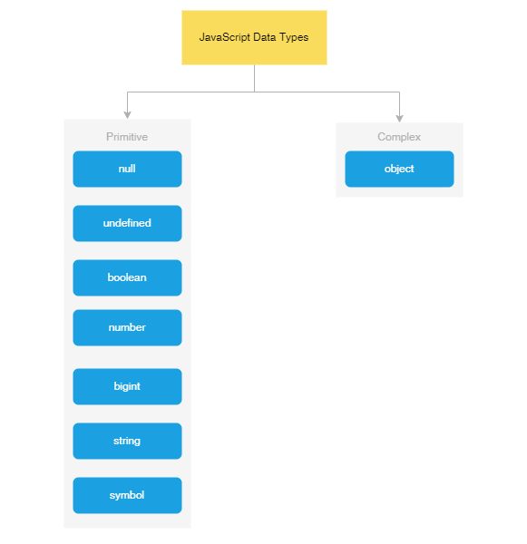
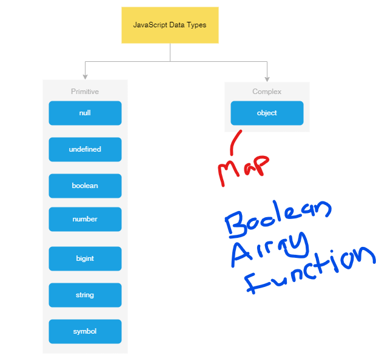

Map VS Object
in Javascript
primitive types in Javascript

complex types in Javascript

| Map |
Object |
| collection of Key-Value pairs |
collection of Key-Value pairs |
| keys are ordered based on the first insert |
keys are not in ordered when iterating |
| slower during creation |
faster during creation |
| faster during search |
slower during search |
References
- https://www.javascripttutorial.net/javascript-data-types
- https://medium.com/front-end-weekly/es6-map-vs-object-what-and-when-b80621932373
- https://bretcameron.medium.com/how-javascript-maps-can-make-your-code-faster-90f56bf61d9d
- https://developer.mozilla.org/en-US/docs/Web/JavaScript/Reference/Global_Objects/Map
- https://developer.mozilla.org/en-US/docs/Web/JavaScript/Reference/Global_Objects/Object